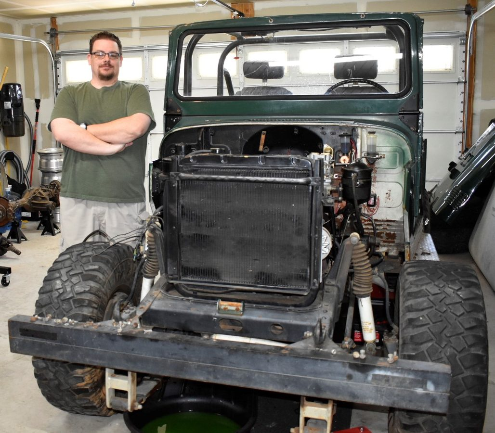
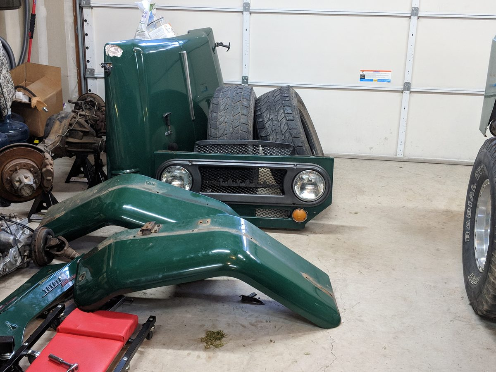

How this started — and why it never stopped
My love for the FJ40 started in the fall of 1988 at age twelve — rattling through the Mojave Desert in the back of one, hitting my head on everything, and absolutely loving every second of it. A few years later it became the first off-road vehicle, the first vehicle I ever drove. Something about them stuck.
Years of naval service and international adventures followed, including an overland run from Darwin to Melbourne exclusively on dirt roads in the Northern Territory — behind the wheel of various Land Cruisers across thousands of miles. I finally got my own in 2017: a battered but running 1968 FJ40 that I planned to give a modest mechanical refresh. The truck had other plans.

What started as a Stage II restoration quickly revealed itself as a full frame-off restomod. Beneath the green paint: excessive bondo masking untreated rust, shoddy wiring, a failed engine, damaged steering, and compromised axle assemblies. The deeper I dug, the more I found. So I committed. Every component stripped, inspected, rebuilt, or replaced. No shortcuts. No bondo.

The build philosophy: keep the heart of the Land Cruiser Toyota. Upgrade where it makes sense — but without sacrificing what makes these trucks legends. The GOAT, Greatest Off-road All-terrain, is nearly ready to prove that out on the trail.